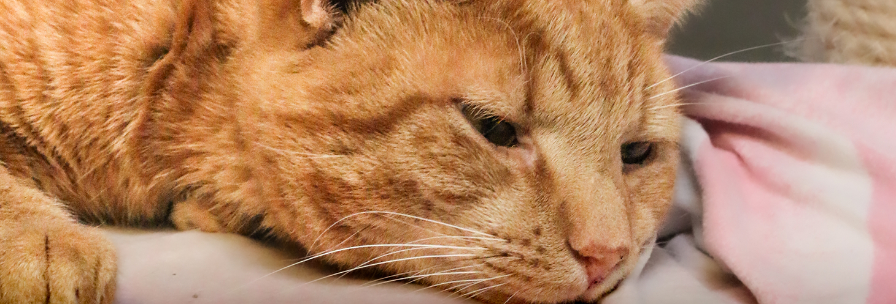

Templates
Fixed content
Reel: The story of an animal
This reel communicate a simple description of a story of an animal at the shelter, and how the shelter helped the animal. This could be operations, medicin, training or a temporary home.
Platform: Instagram and Facebook
The purpose: The purpose of this video is to demonstrate, to the audience, how a donation, to Dyrenes Beskyttelse, impacts the animals.
Carrousel/post: Animals who have waited at the shelter for a long time
This post show different posters of animals from the Roskilde Internat, that are up for adoption. It will show the animals name and how long they have been up for adoption.
Platform: Instagram and Facebook
The purpose: The purpose of these posts is to focus on the animals who have been at the shelter for a long time without being adopted. The end goal is that by giving them more spotlight, they’ll get adopted soon after the post.
Post/reel: End of week recap
This post/reel shows different pictures and videos of moments from a week at Roskilde Internat. This could include: adoptions, new arrivals, operations, donations, visits, playtime and funny or big moments.
Platform: Instagram and Facebook
Format: This can be made as a post or an reel. A reel takes more time putting together, so it depends on how much time the SoMe manager has available.
The purpose: The purpose of these posts is to keep the followers up to date with the shelters and make them feel included as a community of Dyrenes Beskyttelse.
Day to day content
Ideas for the day to date content.
New arrivals of animals
Behind the scene (walks, care, training, preparation)
Good news ( adoption, recovery, progress)
Right now ( spontaneous moments of the shelter )
Get involved (donation, fosters family, voluunters)
Interactive ( Q&A, polls,...)
Click the button to see examples of some of the ideas for the day to day content.
Template